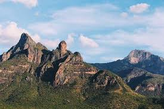

Meet Karamojong communities, hike to the Mt. Kadam campsite, explore local mining areas and visit Moroto and Kotido.

Travel to Nakapiripirit for a cultural tour of a traditional Karamojong ere, hike to the Mt. Kadam campsite, and explore the cattle market and local mining sites. Continue to Moroto to visit traditional kraals, marble-mining areas and Tepeth communities, then travel to Kotido for Nakapelimoru and the sliding rock.
On Day 6, visit Kotido and depart for Kampala or Entebbe the same day. Accommodation, transfers and activity arrangements are confirmed with you when your dates and group size are discussed.
Activities and timing may be adjusted with your guide to suit local conditions.
Prices are per person, as provided. Confirm availability and final inclusions when booking.
| Group size | Price per person |
|---|---|
| 1 guest | $500 |
| 2–5 guests | $450 |
| 6–10 guests | $400 |
Ask us to confirm what is included in your quotation, including accommodation, meals, transport and park or activity fees.
Share your preferred dates and group size and we’ll help plan the details of your trip.